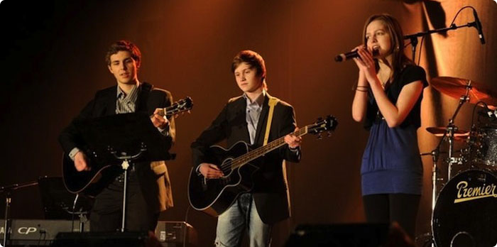

Acting Quiet is a band established in Sula, a small place on the western coast of Norway. In the band, we currently have two members.
On bass, we have Johannes who is also our designer. He does almost everything one may do with computers and has made the album art for "Lucky" and has also made the website from scratch.
Mathias is mainly a guitarist, pianist and vocalist, but he also does song writing. He is also the producer and makes sure everything is in order, when it is about making the songs right.